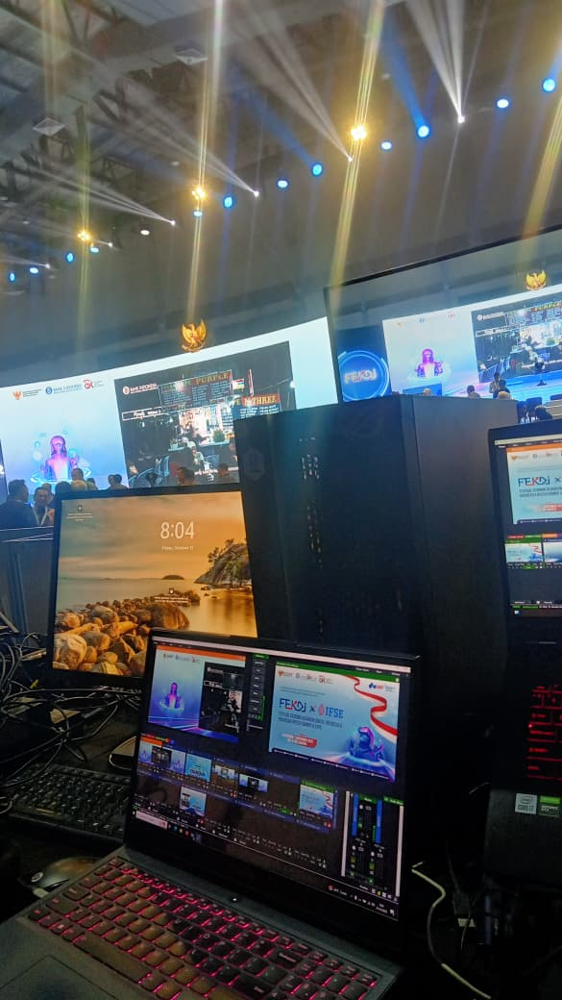
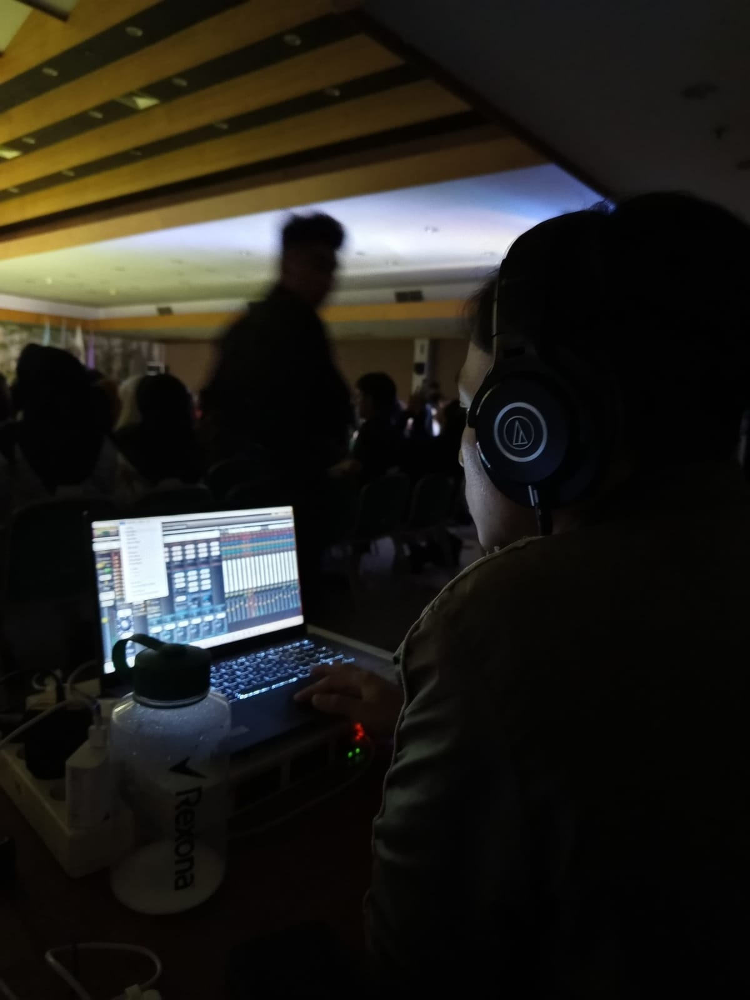
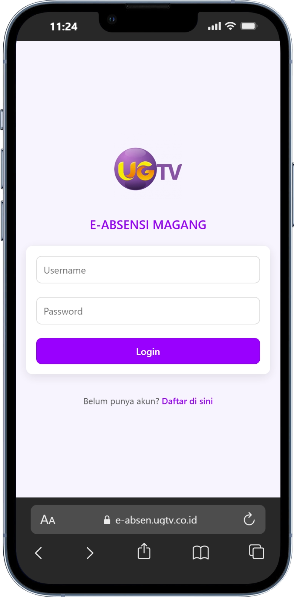
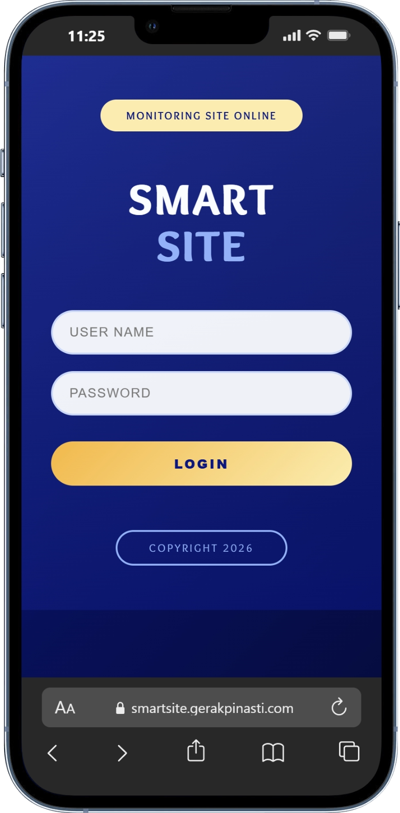

Mahasiswa S1 Sistem Informasi Universitas Gunadarma dengan fondasi kuat di bidang IT (SMK TKJ). Berpengalaman 4+ tahun mengelola infrastruktur teknis penyiaran TV, Technical Audio Support, Live Streaming Event kecil maupun besar serta aktif sebagai teknisi audio lepasan (freelance audioman) untuk acara wedding dsb.

Dokumentasi teknis konfigurasi sistem audio terintegrasi dan manajemen jaringan lokal/SAC untuk memastikan kelancaran distribusi sinyal siaran tanpa adanya interferensi frekuensi.
Buka Dokumentasi Instagram
Kumpulan cuplikan video operasional di lapangan, proses penataan sistem tata suara panggung (PA System), serta penanganan audio *live* yang dirangkum secara rapi dalam Sorotan Instagram.
Buka Dokumentasi Instagram
Sistem logging waktu nyata untuk mencatat kehadiran serta aktivitas harian peserta magang menggunakan validasi lokasi dan swafoto secara otomatis.
Lihat Proyek
Transformasi konsep desain UI/UX menjadi kode front-end dengan integrasi peta geografis (Leaflet Map) interaktif untuk memonitor metrik kondisi sensor secara real-time.
Lihat Proyek